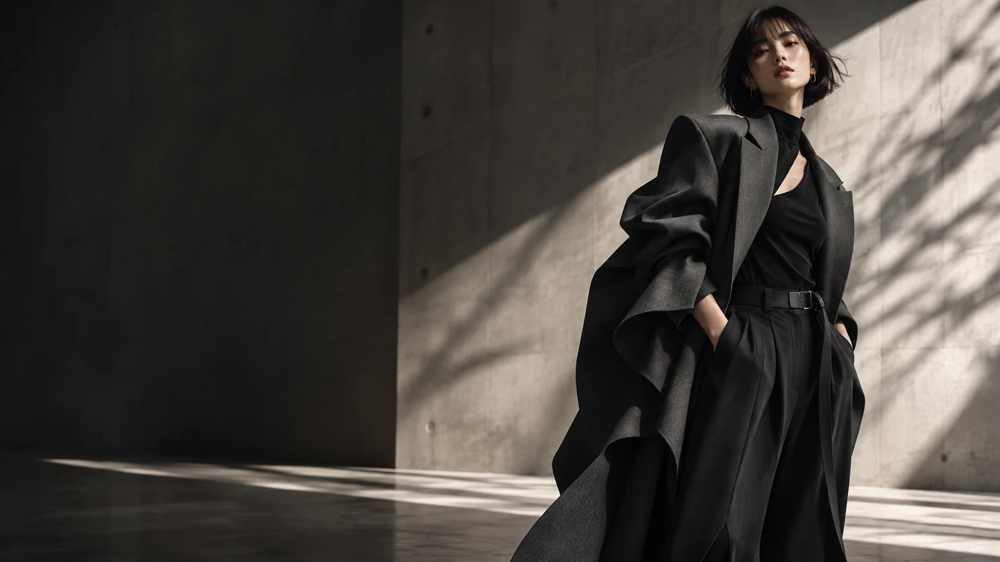

01 / CHARACTER PORTFOLIO
ECHO / UNIT 01
THE ART OF
BEING SEEN.
An editorial portrait, designed to hold attention. Explore lighting moods and framing without changing the original identity.
SCENE DIRECTOR
FRAME COMPOSITION
Original AI-generated editorial concept. Scene and frame controls are visual treatments of one image—not new photos.

ECHO / EDITION NO. 01STUDIO / 01Clean light. Pure form.
CREATIVE STUDY / 2026
An image should feel like a world.
A focused visual identity is more convincing than dozens of unrelated variations. Every crop and lighting treatment below comes from one original concept portrait.
Explore the visual treatments ↗